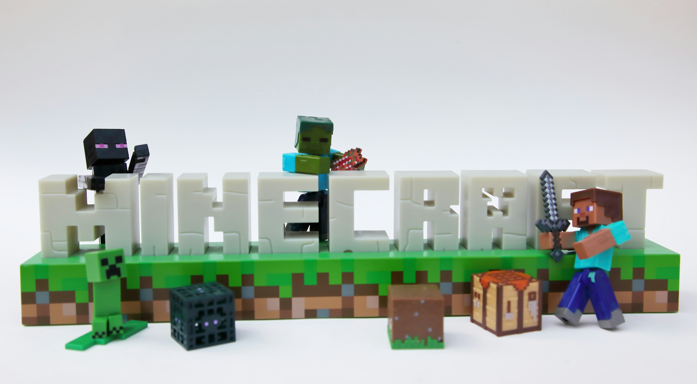

My Experience Playing Minecraft
October 3, 2026 by Tywayne Williams

Minecraft is one of those games that gives you a lot of freedom to decide what you want to do. You can explore different areas, collect resources, build structures, or simply spend time trying to survive. What I enjoy most is that there is no single way that you have to play the game.
One of my favorite parts of Minecraft is building. Starting with simple materials and eventually turning them into something much bigger makes the game interesting. Even when a build does not turn out exactly how I planned, I can always change it and try something different.